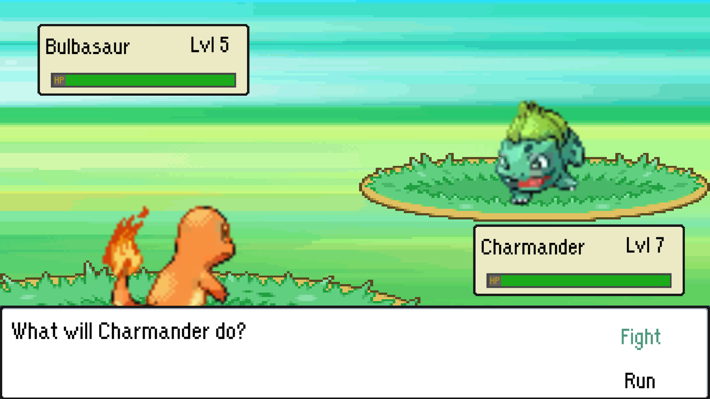

Project 2D Fanbase
A Deep Dive
A passion project I created in Unity.

Project Overview
Project 2D Fanbase is a passion project I built in Unity on my own time, a Pokémon-style RPG. You walk around, run into creatures in the grass, and fight them in turn-based battles. I made it to challenge myself and learn how a system like Pokémon actually works under the hood.
Key Features
- A Pokémon-style turn-based battle system
- Data-driven creatures built as ScriptableObjects, with stats, types, and learnable moves
- A full type-effectiveness chart, so attacks are super effective or not very effective like the real thing
- Grass encounters and a retro overworld
Development Details
- Role: Sole Developer
- Engine: Unity
- Language: C#
- Status: In Development
- Platforms: Windows
Download & Source
What I Worked On
I built this one solo, on my own time, to figure out how an RPG like Pokémon actually works underneath. That meant building the systems from the ground up:
- Creatures made as ScriptableObjects, so I can create a whole new one (stats, types, moves, sprites) as an asset without writing any code
- A runtime layer that builds a creature from that data, hands it the moves it's high enough level to know, and calculates its stats with real formulas
- A turn-based battle system built as a state machine, with menu-driven actions, an HP bar, and battle dialogue
- The full type chart, so every attack checks its type against the target's and deals the right effectiveness
Development Insights
I made this as a passion project to push myself and understand how a game like Pokémon is put together. The most rewarding part was the systems work, using ScriptableObjects to keep the creature data separate from the code, and building the battle and type systems so they'd actually behave like the real thing. I learned a ton about designing data-driven systems, which is something I've carried into everything I've built since.